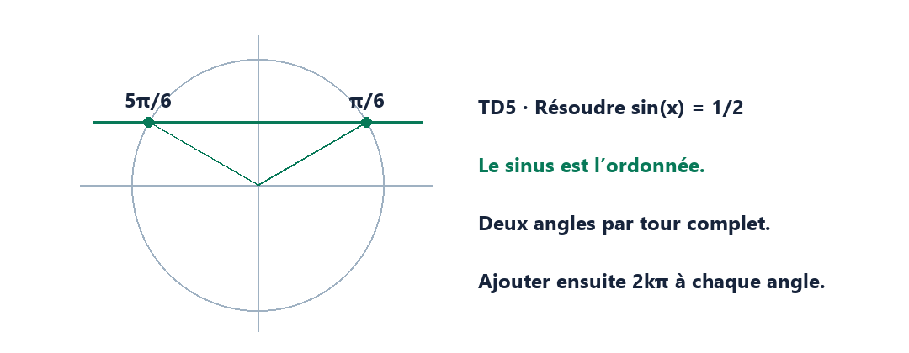

Comprendre le cours
1. Écrire les matrices et résoudre les systèmes
Pour une matrice m×n, lis d’abord m lignes et n colonnes. Le coefficient aᵢⱼ est à l’intersection de la ligne i et de la colonne j. La transposée échange les deux indices. On additionne deux matrices de même taille case par case. Un produit prend une ligne du premier facteur et une colonne du second. Leur longueur doit coïncider.
Un système devient une matrice de coefficients accompagnée des constantes. Le pivot de Gauss élimine une inconnue d’une ligne en ajoutant un multiple d’une autre ligne. Un système homogène a un second membre nul et accepte toujours la solution nulle. L’élimination indique si d’autres solutions existent.
2. Regarder ce qu’une fonction approche
Une limite décrit le comportement de la fonction quand x s’approche d’une valeur ou devient très grand. La valeur au point peut être différente ou même absente. Pour un quotient de polynômes à l’infini, factorise par les plus grandes puissances avant de simplifier. À un point où le dénominateur s’annule, lis le signe des facteurs à gauche puis à droite.
Une fonction est continue au raccord si la limite gauche, la limite droite et la valeur coïncident. Le théorème des valeurs intermédiaires permet de trouver l’existence d’un antécédent entre les bornes d’un intervalle de continuité. Une monotonie stricte aide ensuite à prouver l’unicité.
3. Mesurer la variation et calculer l’aire
La dérivée représente une pente. Dans le cas d’une composition, le facteur donné par la dérivée intérieure doit rester dans le calcul. Si le signe de la dérivée est positif sur un intervalle, la fonction y croît. Un signe négatif indique une décroissance. La tangente en a combine le point (a,f(a)) et la pente f′(a).
Une primitive vérifie F′=f. Une intégrale définie se calcule par différence entre deux valeurs de primitive quand le théorème s’applique. Pour une composée avec la dérivée de son argument, un changement de variable peut rendre le calcul immédiat. Pour un produit, vérifie si l’intégration par parties réduit la difficulté.
4. Lire les angles et utiliser les complexes
Sur le cercle unité, le cosinus est l’abscisse et le sinus l’ordonnée. Les solutions d’une équation trigonométrique se cherchent sur un tour, puis se répètent suivant la période. Avec tan(x), exclue les angles où le cosinus vaut zéro.

Une écriture a+ib donne les coordonnées du complexe, tandis que r eiθ donne sa distance à l’origine et sa direction. Pour élever un complexe à une puissance, la forme polaire sépare le calcul du module et celui de l’argument. Pour retrouver les racines, réintroduis les angles qui diffèrent de 2π avant de diviser par la puissance.
5. Factoriser un polynôme et vérifier le résultat
Le degré est la plus grande puissance qui conserve un coefficient non nul après réduction. Une racine a correspond au facteur X−a. Le degré baisse quand on divise par ce facteur. Les coefficients du binôme de Newton organisent le développement d’une puissance d’une somme.
Pour vérifier une factorisation, redéveloppe ou compare suffisamment de coefficients. Un test avec une valeur particulière peut détecter une erreur mais ne prouve pas seul qu’une identité vaut pour tout X.
Du cours aux TD et TP
Questions TD & TP
Feuilles 1 et 2 · Écrire les coefficients et résoudre H1
Énoncé. Construire la matrice 3×2 telle que aᵢⱼ=i+j. Dans H1, résoudre x+y−z=0, x−y=0 et x+4y+z=0.
- Les indices du sujet commencent à 1. Les lignes sont
[2,3],[3,4]et[4,5]. - La deuxième équation de H1 donne
y=x. Dans la première, on trouve alorsz=2x. La dernière donnex+4x+2x=0, doncx=0. - Il reste
(0,0,0). Vérifie ce triplet dans chaque ligne.
Feuille 3, ex. 1 · Étudier les deux côtés de 5
Énoncé. Étudier, à droite et à gauche de 5, (x²−11x+28)/(x²−25), puis remplacer le dénominateur par (x−5)².
- Le numérateur tend vers
25−55+28=−2. Il reste donc négatif au voisinage de 5. Factorise le premier dénominateur en(x−5)(x+5). - À gauche de 5, le dénominateur tend vers zéro par valeurs négatives, donc le quotient tend vers
+∞. À droite, le dénominateur est positif et la limite vaut−∞. - Avec le carré
(x−5)², le dénominateur est positif des deux côtés et les deux limites valent−∞.
Feuille 4, ex. 1 · Rendre la fonction continue en 1
Énoncé. Pour x≤1, prendre f(x)=(ax)². Pour x>1, prendre f(x)=a sin(πx/2). Déterminer les valeurs de a donnant une fonction continue.
- Chaque formule est continue de son côté. Au raccord, la limite gauche et la valeur valent
a². À droite, la limite vauta sin(π/2)=a. - Impose
a²=a, soita(a−1)=0. On obtienta=0oua=1. Vérifie chacun dans les formules d’origine.
Feuille 5, ex. 1 · Trouver les deux familles d’angles
Énoncé. Résoudre sin(x)=1/2 dans les réels.
- Sur le cercle unité, coupe à la hauteur
1/2. Le premier angle estπ/6. L’autre a le même sinus et vaut5π/6. - La période vaut
2π. Les deux familles sontπ/6+2kπet5π/6+2kπpourk∈ℤ. Vérifie que tu ne perds pas la branche du second quadrant.
Feuille 6, ex. 2 · Expliquer pourquoi 100009 est composé
Énoncé. Développer (X³+X²−1)(X²−X+1) et utiliser le résultat pour prouver que 100009 n’est pas premier.
- Multiplie chaque terme du premier facteur par le second. Après addition, les termes de degré 4, 3 et 2 s’annulent. Il reste
X⁵+X−1. - Pour
X=10, la forme développée vaut 100009. La forme factorisée donne1099×91. Les deux facteurs sont entiers et strictement supérieurs à 1, ce qui suffit.